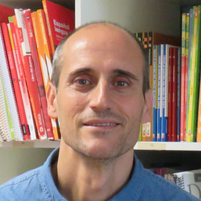

|  | Jorge Pascual DíazTécnico de Comunicación CUI John Robinson is a Professor at the Munk School of Global Affairs and Public Policy, and the School of the Environment, at the University of Toronto; an Adjunct Professor with the Copenhagen Business School; and an Honorary Professor with the Institute for Resources, Environment & Sustainability at The University of British Columbia. At the University of Toronto, he is Presidential Advisor and Chair of the President’s Advisory Committee on the Environment, Climate Change and Sustainability. |
2010-2015 bla bla bla
Centro Universitario Internacional UPO
| Dates | Work Done |
|---|---|
| 2010-2015 | bla bla bla |
| 2015-2020 | Centro Universitario Internacional UPO |
| Diseño Gráfico | ⭐⭐⭐⭐⭐ | Diseñio web | ⭐⭐⭐⭐ |
| Wordpress | ⭐⭐⭐ | idiomas | ⭐⭐ |